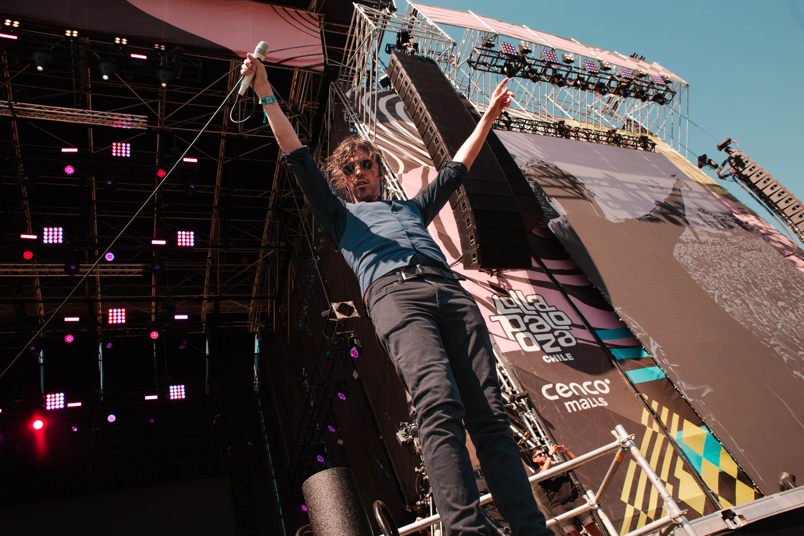
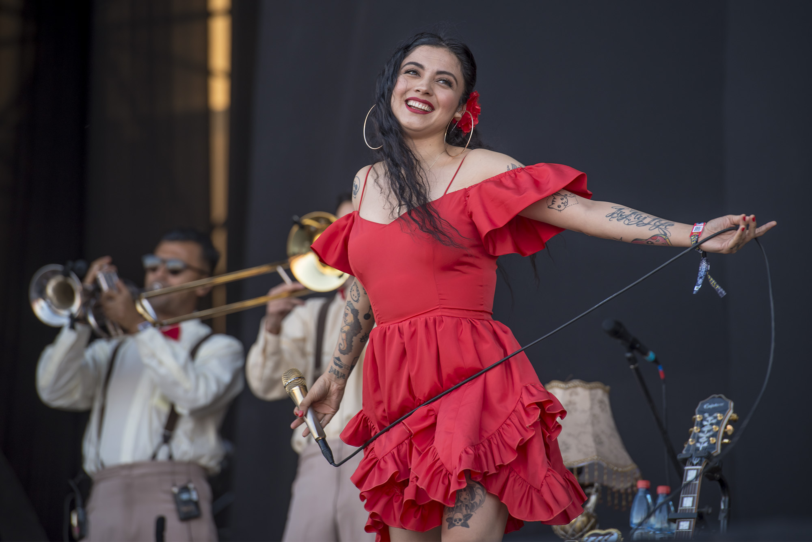
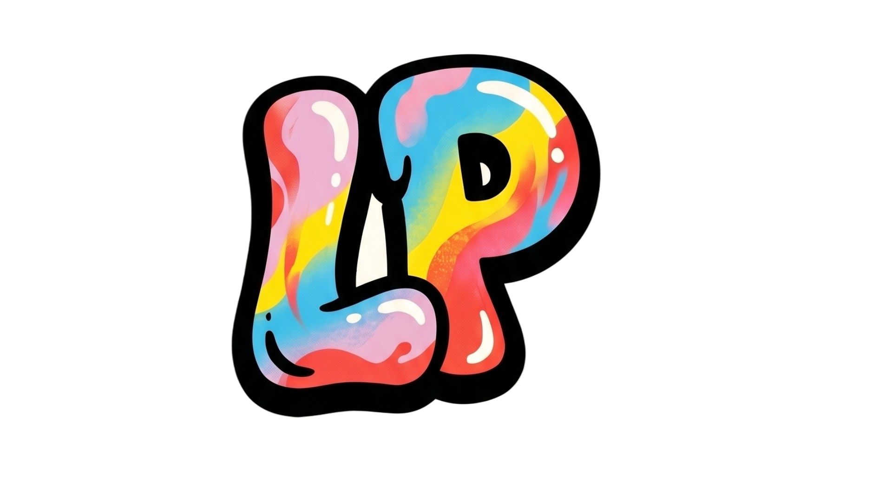
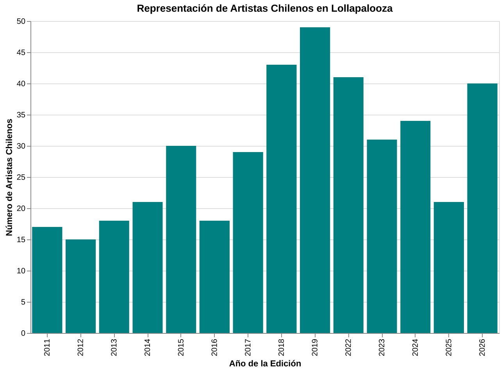

A pesar de que los artistas internacionales son quienes más llaman la atención en los festivales de música como el Lollapalooza Chile —ya sea por su escenografía, interacción con el público o la performance que entregan —, los cantantes nacionales no se quedan atrás y demuestran que pueden hacer acto de presencia al igual que sus colegas del extranjero. Glup!, Los Tres, y Mon Laferte son algunos de los nombres de artistas chilenos que se han presentado en este prestigioso festival de música. Aunque hoy en día la cantidad de músicos nacionales que suben a los escenarios de Lollapalooza es amplia, es importante destacar que en los inicios de este evento el panorama era muy diferente.


En 2011, año en que se inició este festival, asistieron un total de 17 artistas chilenos, entre ellos Chico Trujillo y Anita Tijoux. No fue hasta 2018 que este número se duplicó, llegando a un total de aproximadamente 40 músicos. Un año después, 49 artistas nacionales se presentarían en este evento, alcanzando el número más alto en su historia.
Si bien es cierto que el aumento de la presencia de artistas nacionales en el evento no es progresivo, es innegable que a partir de 2018 sí se incrementó su cantidad respecto a años anteriores, en donde el número de artistas se mantenía alrededor de los 20.
Por otro lado, para la versión de este año se presentaron un total de 40 cantantes y bandas chilenas, siendo una de las ediciones con mayor presencia nacional en la parrilla musical. Es interesante que, a pesar de que el público se vuelve cada vez más exigente con la puesta en escena de los artistas, los cantantes chilenos demuestran que pueden satisfacer las necesidades de la audiencia a su manera. Esto da indicios de que las presentaciones que ofrecen los cantantes nacionales se adaptan a los cambios en las formas de hacer shows que tienen tanto los headliners del festival como el resto de los artistas de carácter internacional.
Cabe señalar que, de entre todas las ediciones del Lollapalooza que se han realizado en el país, solo ha habido un headliner nacional: Los Bunkers, quienes se presentaron bajo esta etiqueta en la edición de este año (2026), logrando un gran contraste con la primera versión del festival, en donde asistieron como un grupo de artistas más “del montón”.
Lo anterior demuestra que los cantantes nacionales pueden llegar a alcanzar el nuevo estándar de presentaciones que el público exige, así como también deja en evidencia que la música nacional sí es valorada dentro del país.
En el siguiente gráfico puedes observar cómo ha variado la representación de artistas chilenos en Lollapalooza Chile:
